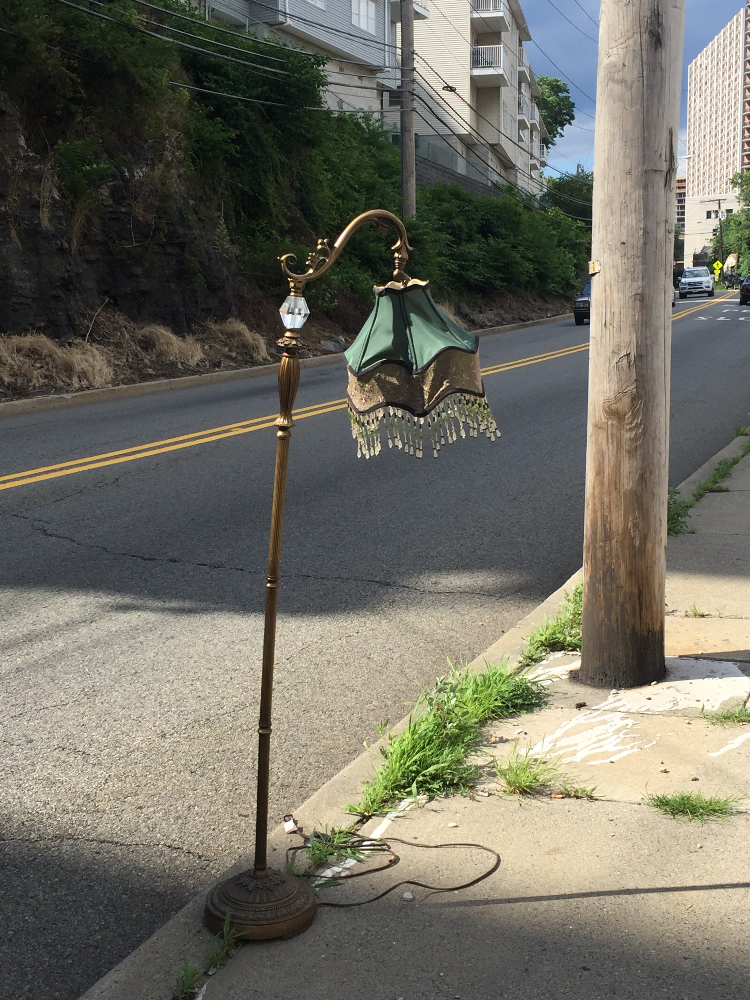
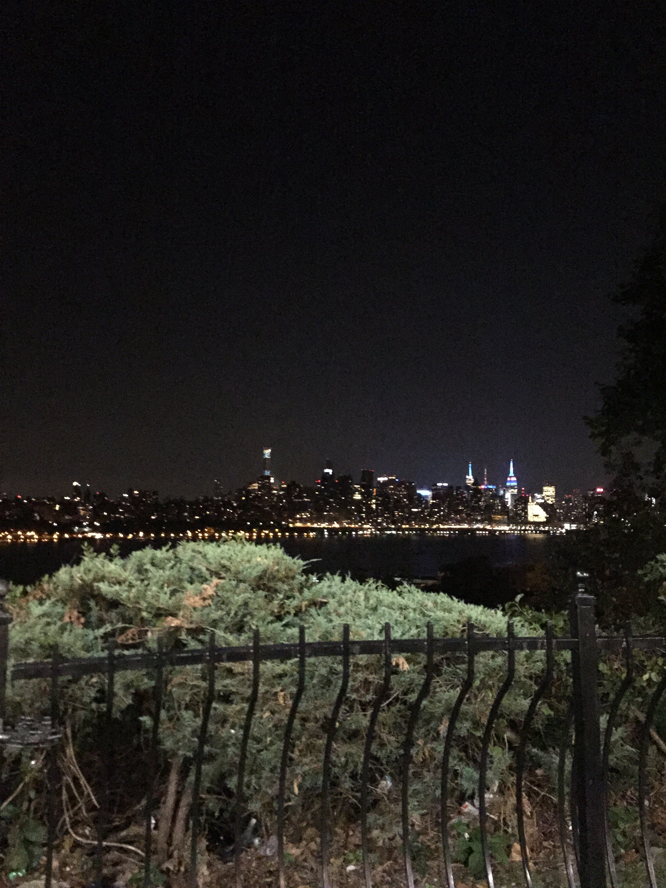
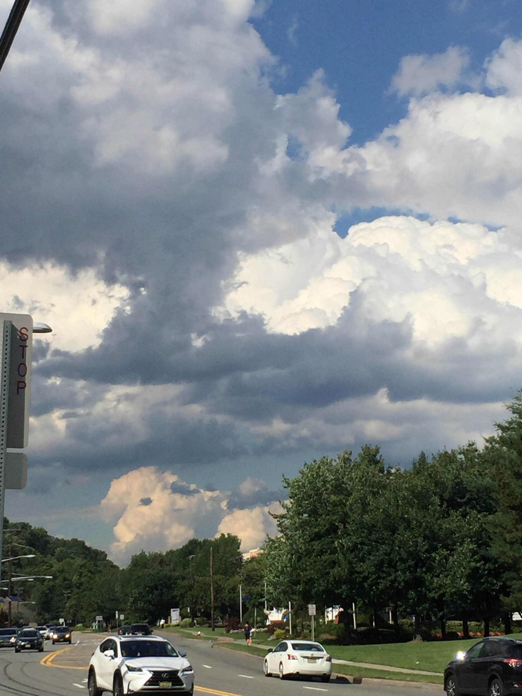

Blue Bliss
December 24th, 2016 Edgewater, New Jersey This is one of my favorite shots. Hiking in a forest trail one December afternoon I noticed how still the sky and water were. At that moment I captured bliss.
NewYork Portrait
July 20th, 2018 Edgewater, New Jersey Edgewater pier is one of the best places to capter a photo of NewYork. This was taken as the sun set. I decided to add multiple filturs to give it a portrait vibe.
Akward Stops
September 27, 2019 Palisades, New Jersey This is what I like to call a comedic piece. During traffic I noticed where I was and could'nt resist taking a photo. Through my car window you can dee a nice cloudy day and an akward position I was in.
Evening Stroll
April 24, 2015 Fairview NewJersey On my way home and the tree was shadowed perfectly. The sky had many shades and the 1 star twinkled ubove. One of my favorite moments was capturing this transition of day and night.